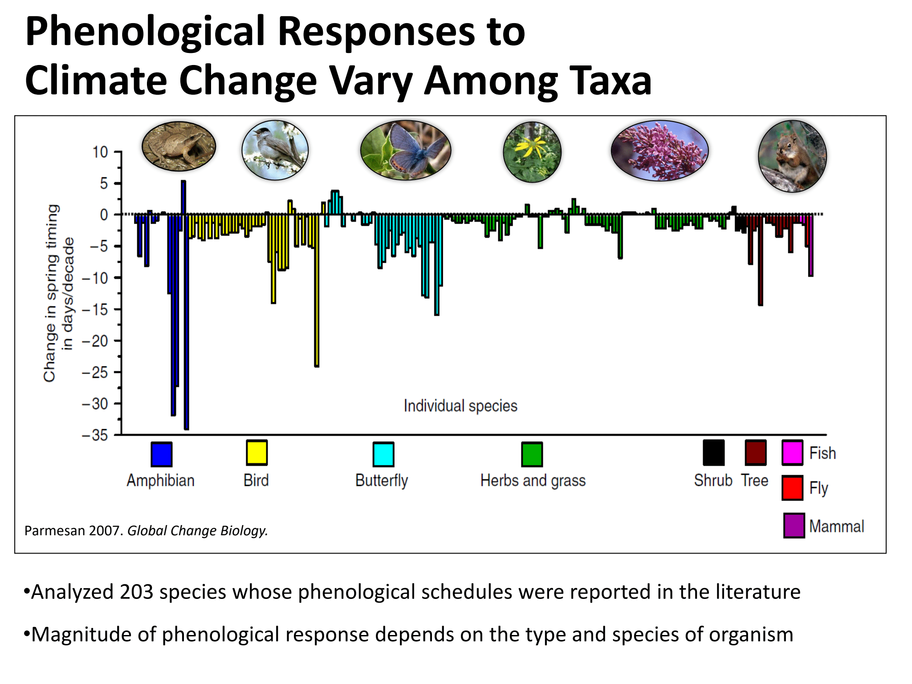
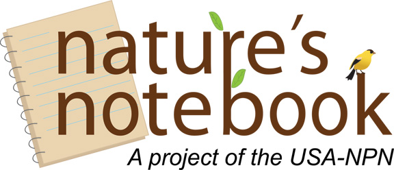

August 10, 2020
Climate
Citizen Science
Phenology, in its simplest definition, is the study of nature's calendar. It seeks to answer questions such as "what signals tell birds that it is time to migrate south for the winter?", "why spring cold snaps can ruin a year's crop yield?", and most importantly, "how accurate have Punxsutawney Phil's predictions been over the years?". Our lives are greatly affected by the timing of these phenological events, and so understanding the underlying mechanisms behind them is very important. More recently, scientists have become increasingly interested in studying how these timings are being altered by global climate change.
Organisms rely on signals from the environment to let them know when conditions are most optimal for certain actions or events. These relationships have become intertwined through evolution as organisms that can take advantage of optimal conditions are generally more reproductively successful. Signals range from temperature to day length and many more. Through the study of phenology we can see just how connected the natural world is.
So what happens if one of these connections gets out of balance? Because organisms are responding to many different signals and stimuli, there are opportunties for crucial connections to become out of phase with one another. Below are the results of a study from 2007 by Camille Paremesan, published in Global Change Biology:
Through a meta analysis of 203 species, they found a wide range in the degree of phenological response to differing latitudes. With this finding, we are able to extrapolate species responsiveness to predicted conditions of climate change, with amphibians greatly accelerating their spring timing relative to other oragnisms. There were even instances where species were found to delay spring timing. The most important aspect of this research was to point to the fact that species' responses to climate change may be very nuanced and complex, and the differences in response may lead to mismatches in timing that could negatively impact critical populations.
There are many institutes across the world that are currently running large scale phenology research projects. The USA National Phenology Network has been collecting and analyzing phenological data since 2007. They have set up Nature's Notebook, a citizen science initiative, which has brought phenological research into the hands of volunteer scientists across the nation. This approach to research not only generates enormous amounts of data that may not have been possible previously, but also increases support from local communities who can now participate in impactful, meaningful research. Participation in Nature's Notebook is nearing 40,000 registered users and over 400,000 observations each year, a number which would be impossible to reach without the help of all of the voluteer scientists. This work allows scientists to observe how phenological timings are changing across the nation, and generate visuals, as seen at the top of this post, which display this years onset of spring compared to the average based on plant leaf index.
So how well does Punxsutawney Phil understand the complex study of phenology? Well, according to Live Science, Phil has only been correct in his predictions 39% of the time since he began back in 1886. It seems like his shadow strategy isn't too well calibrated; even a coin flip would likely be better. We will have to wait until next February to see if he's come up with a more accurate model!
If you are interested in learning more on this topic, I will be co-presenting a talk with Dr. Alisa Hove and Jenna Joyner on August 13, 2020 about the phenological research initiatives at Warren Wilson College as part of the virtual Conservation Exchange Webinar Series. Please join us here through Zoom at 2:30PM Eastern Time!
Pomona, California
|
kitchensjn@gmail.com
|
(804) 572-3197